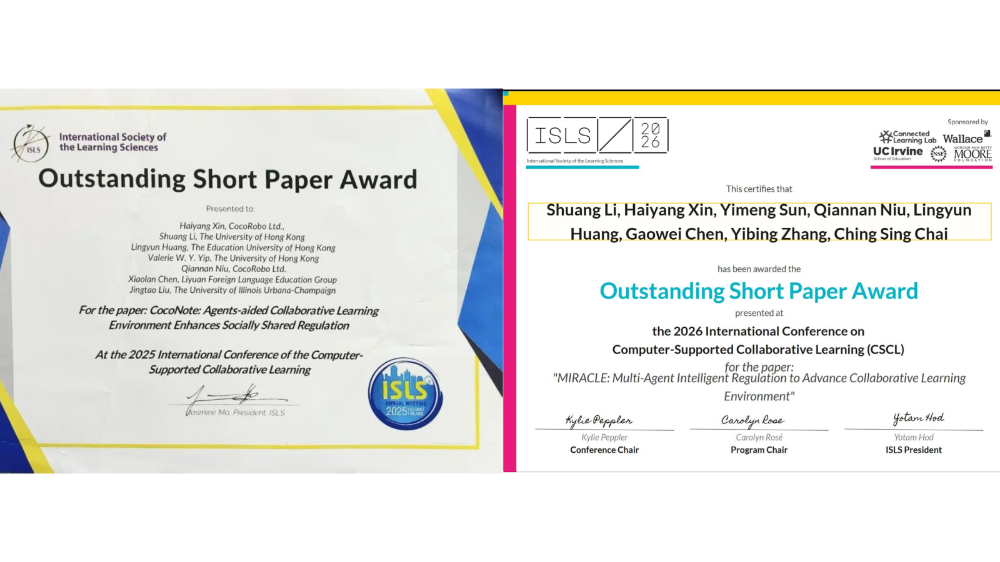

研究全景｜AI-native learning systems
COCOROBO RESEARCH · AI-NATIVE LEARNING
从工具到学习系统
CocoRobo 的 AI 原生学习研究
教师创建智能体 × 学生协作学习
辛海洋 Tony香港中文大学教育学院30 min
02 · ROUTE
30 分钟，回答四个问题
先建立研究体系，再进入两条具有连续证据的研究主线。
教师研究｜从工具使用者到智能体创建者
学生研究｜从一对一辅导到协作学习生态
共同结论｜关键不是更多 AI，而是如何配置 AI 参与
CORE THESIS
AI 正在重组学习系统本身
研究对象不是单一工具，而是人、AI、环境与学习活动之间涌现的关系结构。
学习教学协作证据实践
04 · METRICS
研究平台从真实学校中生长
规模提供持续实施与迭代的基础；因果结论仍依靠系统研究。
1,400+｜覆盖香港、澳门与大湾区学校
5,000+｜通过产品、培训与学校项目触达教师
100,000+｜学生参与平台与课堂实践
11｜精选研究输出
5｜长期大学合作伙伴
RPP｜学校、教师、研究者与产品团队共同迭代
05 · SPECTRUM
五个平台构成可研究的学习基础设施
每个平台解决一个学校问题，也让学习过程变得可观察、可解释、可改进。
CocoFlow｜教师创建与编排教学智能体
CocoClass｜课堂互动、反馈与证据生成
CocoStudy｜课后练习、诊断与学习路径
CocoNote｜共享作品、探究与协作调节
CocoView｜课堂话语与多模态分析
06 · SPECTRUM
五类关系定义长期研究议程
教师主线回答 Teaching 与 Practice；学生协作主线回答 Learning 与 Collaboration；两条线共同推进 Evidence。
Learning｜学习路径、认知劳动与知识建构
Teaching｜教师编排、设计与证据解释
Collaboration｜群体认知、共同调节与知识共建
Evidence｜交互、话语、日志与多模态数据
Practice｜进入真实学校生态而不增加教师摩擦
07 · SPLIT
六条研究路径，两条已有连续证据
今天重点展开教师创建教学智能体与 AI 支持协作学习。
教师创建教学智能体｜CocoFlow · Teacher AI agency
AI 支持协作学习｜CocoNote · CSCL · SSRL
学生 AI 素养课程与评价｜ongoing
智能体支持学生学习｜ongoing
课堂话语分析与教师反思｜ongoing
AI 支持自我调节学习｜ongoing
08 · CYCLE
设计型研究让产品与理论共同演化
不是先做产品、再写论文；而是每轮实践生成新问题，再进入下一轮设计。
Design
Implement
Analyze
Reflect
Iterate
证据流：平台日志 · 设计作品 · 课堂观察 · 问卷访谈 · 多模态分析 · 长期实施数据
09 · TIMELINE
连续输出，让证据逐年累积
每一阶段回答上一阶段留下的问题，并把结果带回下一轮设计。
2024｜CocoNote PBL · 132 名香港学生 · 建立无 AI 协作学习基线
2025｜Agent-aided SSRL · Outstanding Short Paper · 智能体进入共同调节
2026｜AERA · ISLS · AIED · 教师能动性、多智能体编排与学生智能体创建
10 · SPLIT
两条主线围绕同一个问题
当 AI 进入课堂，如何扩大能力，同时不让人的思考、判断与责任消失？
教师｜创建与治理 AI · 外显教学法 · 配置工作流 · 判断授权边界
学生｜协作与共同调节 · 共享知识作品 · 规划监控反思 · AI 嵌入协作
共同设计伦理：Powerful but humble systems
01
RESEARCH PROGRAMME
教师创建智能体
从工具使用、工作流设计，到 Boundary Learning。12 · COMPARE
使用 AI 与设计 AI 参与，是两种能力
真正高级的教师 AI 能力，是把教学法写进系统，并保留撤回权。
工具使用者｜生成教案 · 制作题目 · 自动反馈 · 提高效率
智能体创建者｜定义任务边界 · 配置角色流程 · 诊断模型失配 · 保留人类判断
能力迁移：操作能力 → 设计能力 → 治理能力
13 · METRICS
12 个月、三轮迭代、1,000+ 教师
广泛培训覆盖深圳多个区；系统研究证据来自坪山三批次。
1,000+｜教师参与智能体创建培训
3｜坪山大规模批次被系统研究
4 + 1｜已接收会议论文 + 在研期刊
Apr 2025｜工具使用与 Prompt
Sep 2025｜学科社群与多智能体工作流
Apr 2026｜系统研究与 Boundary Learning
14 · LAYERS
规模化需要区、校、学科与课堂联动
培训只是入口；持续专业学习必须进入学校共同体与真实课堂。
区级培训｜政策对齐与共同语言
学校种子教师｜理论、实践、创建、展示
学科共同体｜将平台能力转为课堂案例
专题研修｜英语评价、生物探究、信息技术
真实课堂｜学生任务、AI 边界、教师判断与作品证据
15 · TIMELINE
研究问题从“会不会”走向“如何治理”
五项研究不是拼论文，而是一条逐步深入的问题链。
1｜CAN they? · 能否创建有教学意义的智能体？
2｜HOW do they? · 进入平台后如何真实参与？
3｜DESIGN traces · AI-TPACK 如何出现在设计中？
4｜WHY sustain? · 培训后为什么难以持续？
5｜SYNTHESIS · 成熟教师如何配置 AI 边界？（期刊在研）
16 · STEPS
教师通过“创建”学习
智能体成为可运行的教学作品：外显、测试并修订隐性教学法。
隐性想法｜我通常会怎么提示学生？
外显为工作流｜角色、Prompt、知识库、分支与循环
运行与失败｜模型输出暴露任务—模型失配
反思与修订｜教学法变成可讨论、可比较的作品
专业学习的核心单位，是一个可被审视的教学设计对象。
17 · LANES
培训不会自动产生积极创建者
平台行为呈现不同参与路径，实施支持必须匹配不同需要。
Active Creators｜持续创建、测试、修订与分享
Explorers / Browsers｜浏览案例与试用功能，创建较少
Low-engagement｜进入平台，但缺少持续设计行为
支持机制｜时间、范例、技术协助、同伴展示与组织认可
18 · TRACES
AI-TPACK 可以在设计痕迹中被观察
不要只问教师是否会用 AI；看他们设计了什么、如何测试、怎样修订。
Workflow｜流程节点与条件分支
Architecture｜单智能体 / 多智能体角色配置
Testing｜测试频率、失败诊断与迭代
Reflection｜对目标、边界和责任的解释
19 · TRIAD
有能力，不等于会持续创建
活动系统矛盾会挫败三种心理需要，导致培训后的参与下降。
Autonomy｜能否解决自己的真实教学问题？
Competence｜平台、时间与支持是否足够？
Relatedness｜是否有同伴、领导和学科共同体支持？
可持续发展 = need-supportive + 校本嵌入 + 反复迭代
20 · BOUNDARY
成熟能动性，是决定 AI 的边界
不是使用 AI 更多，而是决定它何时行动、受限、被收回或保持缺席。
任务边界识别｜哪些任务需要学生挣扎、同伴对话或教师判断？
模型边界诊断｜失败来自 Prompt、流程、模型限制，还是不适合委托？
教学责任划分｜哪些决定即使 AI 能做，也必须留给人？
结构化配置｜把判断转成 Prompt、工作流、约束与非介入区
21 · CASES
边界判断必须落成具体设计动作
目标不是无摩擦自动化，而是保留对学习有价值的认知与社会摩擦。
AI 过早给答案｜延迟反馈，要求学生先尝试推理
学生依赖 AI 生成口语稿｜先同伴批评或口头排练，再用 AI 修订
AI 评价量规僵化｜人工修订标准，最终判断由教师主导
AI 介入后停止讨论｜暂时关闭或约束 AI，恢复同伴对话
22 · SYNTHESIS
教师研究指向“高质量参与配置”
教师能动性必须被设计进系统，而不能停留在态度宣言。
创建是学习｜制作智能体外显并修订教学法
能力需要组织条件｜培训后仍需要时间、共同体与学校支持
设计痕迹是证据｜工作流、测试与修订比自陈更接近真实能力
成熟能力是边界治理｜决定何时授权、约束、收回或让 AI 缺席
02
RESEARCH PROGRAMME
学生协作学习
从共享知识空间、社会共享调节，到多智能体编排。24 · MODES
AI 学习不只有 Tutor 模式
CocoNote 补上的是 Mode D：AI 作为协作知识工作的参与者。
A · Tool｜起草、翻译、总结
B · Tutor｜一对一讲解、练习与个性化反馈
C · Assistant｜课堂反馈、形成性评价与教师支架
D · Partner｜进入共享知识工作，支持群体认知与调节
25 · WORKSPACE
共享空间优先，AI 参与其次
AI 不是协作旁边的聊天窗口，而是嵌入画布、群聊与共同作品之中。
共享画布｜非线性组织想法与证据
群聊与作品｜讨论与外显化发生在同一空间
Agent Layer｜反应式支持嵌入共同知识工作
Lightbulb｜低打扰的主动调节
26 · TIMELINE
三代系统，每一代解决上一代的问题
从 pedagogy-first，到 agent-aided regulation，再到 multi-agent orchestration。
2023｜R&D 0.x · 先研究协作知识建构 · 尚无 AI 智能体
2024｜CocoNote 1.0 · 132 名香港学生 · PBL + Hypermedia
2025｜CocoNote 2.0 · 78 名六年级学生 · 3 reactive + Lightbulb
2026｜CocoNote 3.0 / MIRACLE · 90 名五年级学生 · Boss + 4 specialists + Lightbulb
27 · FOUNDATION
先证明协作学习本身成立
132 名香港初中生围绕真实社区问题完成一学期 PBL，没有 AI 智能体。
真实任务｜如何改善社区中老年人的生活质量？
协作过程｜问题探索 · 项目管理 · 协作研究 · 产品原型
学生作品｜防跌倒鞋垫 · 陪伴机器人 · 健康管理工具
研究意义｜建立“没有 AI 也能产生真实协作作品”的教学基线
28 · AGENTS
CocoNote 2.0：智能体进入共同调节
三个反应式智能体加一个主动式 Lightbulb，支持社会共享调节。
Planning｜目标与任务分工
Monitoring｜进度与参与识别
Reflection｜过程评价与调整
Lightbulb｜扫描协作信号并主动提示
开放问题：学生仍需自行选择智能体，形成选择负荷与交互碎片化。
29 · STEPS
Lightbulb 主动调节，但不替小组调节
它不回答，而是提醒；不打断，而是闪烁；不替代，而是把控制权还给小组。
Trigger Detection｜每 3 分钟扫描沉默、失衡或停滞
Visual Nudge｜角落图标闪烁，小组决定是否打开
Metacognitive Prompt｜提出问题，引导总结、检查与协商
“你们已经安静了一会儿。继续之前，要不要先总结目前已经决定了什么？”
30 · ARCHITECTURE
MIRACLE 把单体助手改成多智能体编排
同一基础模型，差异来自架构：Boss 路由意图，专业智能体提供阶段性支持。
Generic LLM｜学生选 Prompt · 上下文碎片化 · 只在被请求时介入
MIRACLE｜Boss · Plan · Monitor · Reflect · Knowledge
Lightbulb｜并行扫描协作数据，每 3 分钟触发低打扰提示
31 · EXPERIMENT
准实验尽可能控制住模型能力
两组使用同一学校、平台、基础模型、任务与时长；核心差异是智能体架构。
Control｜Generic GPT · 48 名学生 · 4–6 人一组
Experimental｜MIRACLE · 42 名学生 · 4–6 人一组
共同条件｜同一 CocoNote · GPT-5-Nano · 120 分钟设计思维任务
比较的不是“有 AI / 无 AI”，而是通用单体与学习科学对齐的编排。
32 · PROCESS
规划、监控与反思显著改善
编排架构在过程性调节上优于通用单体助手；情绪调节在短时任务中未显著。
Planning｜MIRACLE > Control · 显著
Monitoring｜MIRACLE > Control · 显著
Reflection｜MIRACLE > Control · 显著
Emotion｜差异不显著
图示表达方向，不把过程指标转写成未经提供的标准化效应量。
33 · EFFECT
协作作品质量出现大效应
MIRACLE 在概念新颖性、设计完整性与表达清晰度上高于通用 GPT 助手。
Control｜M = 4.78
MIRACLE｜M = 7.61
r = .77｜large effect
p < .001｜Mann–Whitney U
ICC = .89｜rater reliability
15-point｜3-dimension rubric
Mdn 7.50 vs 5.50 · SD 0.99 vs 1.48；仍受单校、小样本与短时任务限制。
RECOGNITION
连续两年获得 CSCL Outstanding Short Paper
研究成果来自跨校、跨机构团队的持续协作。

35 · CONVERGE
两条研究线在教师编排处汇合
AI 可以扩大容量，但任务、时机、解释与边界仍需要教学判断。
教师智能体｜设计 AI 参与 · 保留教学责任 · 形成 Boundary Learning
学生协作｜规划、监控与反思 · 保持同伴对话 · 共同建构知识作品
教师是协作学习生态的编排者。
36 · FRONTIER
下一步走向长期、可解释与跨情境证据
研究基础设施需要进入更长周期、更复杂课堂与更多文化情境。
Longer cycles｜从 90–120 分钟走向多周项目
Multimodal evidence｜整合聊天、画布、作品、音视频与课堂话语
Non-linear development｜识别谁受益、谁挣扎
Teacher orchestration｜解释证据、决定介入时机与 AI 边界
Cross-cultural scaling｜不同文化、年龄与资源条件
Open RPP｜学校、大学、教育局、基金会与国际组织共同研究
COCOROBO RESEARCH
Powerful, but humble.
Agency, not automation.
Productive friction, not frictionless optimization.
Responsibility, not opacity.
谢谢 · Questions & Collaborationtony@cocorobo.cc · haiyang.xin
38 · APPENDIX
附录：教师智能体研究输出
已接收会议论文与在研综合框架。
AERA 2026 · Roundtable｜Teachers’ Behavior in Building Agents…
AERA 2026 · Poster｜Empowering Teachers as Creators of Pedagogical Agents…
ISLS 2026 · Long Paper｜An Activity-Theoretical Approach…
ISLS 2026 · Short Paper｜Modeling AI-TPACK in Practice…
Ongoing Journal｜Redistributing Pedagogical Control…
39 · APPENDIX
附录：CocoNote 研究输出
三年连续进入 CSCL，2025 与 2026 获得 Outstanding Short Paper。
CSCL 2024 · Poster｜CocoNote Supported Project-Based Learning Environment…
CSCL 2025 · Outstanding Short Paper｜Agents-aided Collaborative Learning…
CSCL 2026 · Short Paper｜MIRACLE: Multi-Agent Intelligent Regulation…
40 · ETHICS
研究证据必须连同边界一起呈现
短期真实课堂证据不能直接转写成系统级或全国性因果结论。
可以主张｜真实 K–12 课堂中的准实验与设计研究证据
不主张｜AI 替代教师、同伴协作或生产性挣扎
关键限制｜单校、年龄特定、小样本与 90–120 分钟短时干预
伦理审批｜Teacher PA · HKU FREC EAE26002｜MIRACLE · HKU FREC EAE25010
41 · SOURCES
资料来源
本演讲基于三份研究支持材料重新组织。
Overall｜CocoRobo Research · AI-Native Learning Systems
Teacher｜From AI Tool Users to AI Agent Creators
Student｜CocoNote · Beyond AI Tutoring